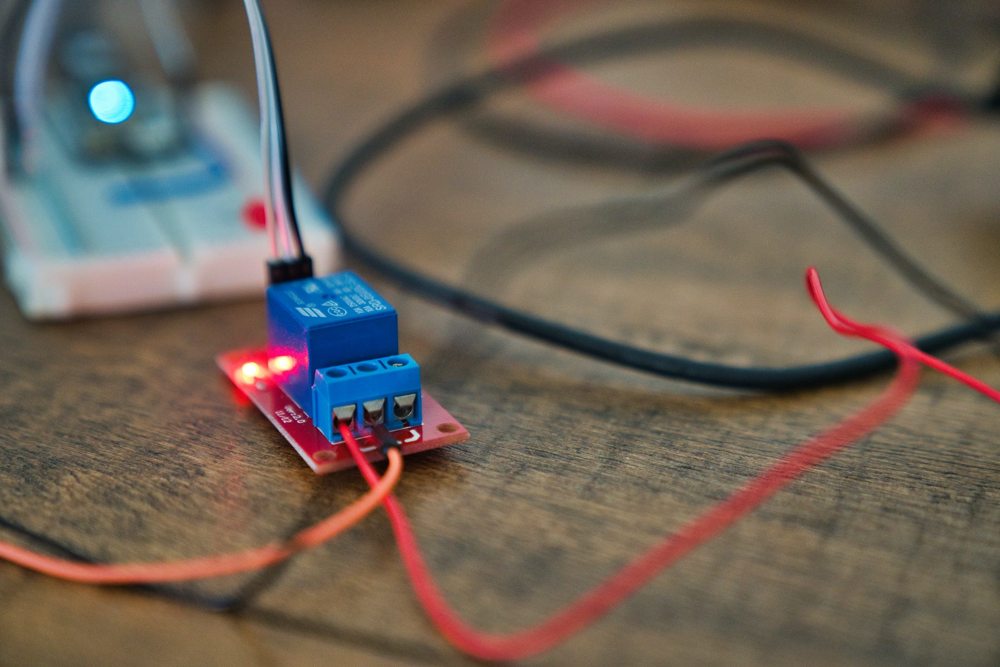

pg_graphqlgraphqldb=# select id, email from account where email = 'cat@x.com';
id | email
----+-----------
3 | cat@x.com
graphqldb=# select graphql.resolve($$
query accounts {
accountCollection (filter: {email: {eq: "cat@x.com"}}) {
edges {
node {
id
email
}
}
}
}
$$);
resolve | {"data": {"accountCollection": {"edges": [{"node": {"id": 3, "email": "cat@x.com"}}]}}}
query aardvark {
accountCollection (filter: {email: {eq: "aardvark@x.com"}}) {
edges {
node {
id
email
blogCollection (filter: {id: {eq: 1}}) {
edges {
node {
id
name
description
blogPostCollection (orderBy: {createdAt: AscNullsFirst}, first: 3, after: "WyIxNTIyZGNlZi1hY2NiLTQ4MTEtOThmNi0wOGZjNWNkMjYxMmMiXQ==") {
edges {
cursor
node {
id
title
body
status
blog {
id
}
}
}
}
}
}
}
}
}
}
}
first: n
last: n
retrieve the first/last n results
after: cursor
before: cursor
retrieve results after/before cursor
cursor is an opaque string (client doesn't know encoding)
hasNextPage / hasPreviousPage fieldscurl "http://localhost:3000/account" -X GET 11.4m Wed 25 May 17:01:14 2022
[{"id":2,"email":"bat@x.com","encrypted_password":"asdfasdf","created_at":"2022-05-24T18:04:20.274252","updated_at":"2022-05-24T18:04:20.274252"},
{"id":3,"email":"cat@x.com","encrypted_password":"asdfasdf","created_at":"2022-05-24T18:04:20.274252","updated_at":"2022-05-24T18:04:20.274252"},
{"id":4,"email":"dog@x.com","encrypted_password":"asdfasdf","created_at":"2022-05-24T18:04:20.274252","updated_at":"2022-05-24T18:04:20.274252"},
{"id":5,"email":"elephant@x.com","encrypted_password":"asdfasdf","created_at":"2022-05-24T18:04:20.274252","updated_at":"2022-05-24T18:04:20.274252"},
{"id":1,"email":"aardvark@x.com","encrypted_password":"fdsafdsa","created_at":"2022-05-24T18:04:20.274252","updated_at":"2022-05-24T18:04:20.274252"}]⏎
"/rpc/<function_name>graphql.resolve